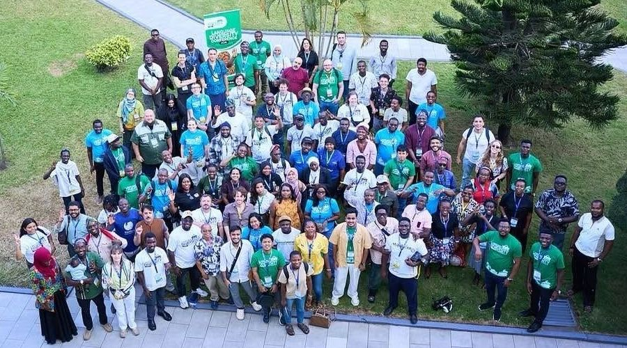
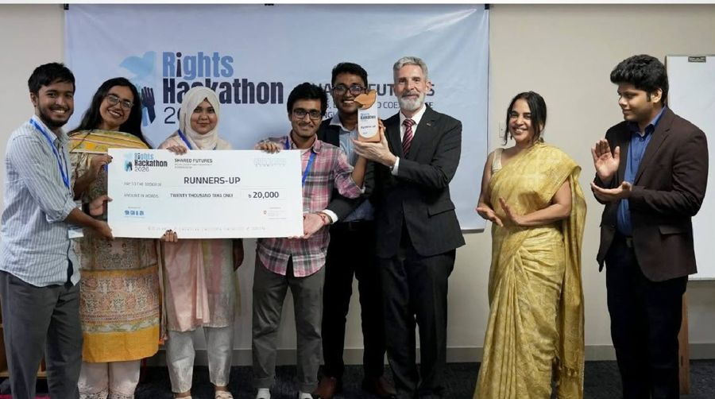
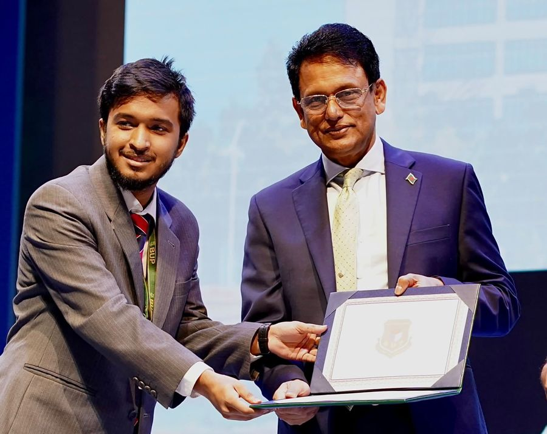
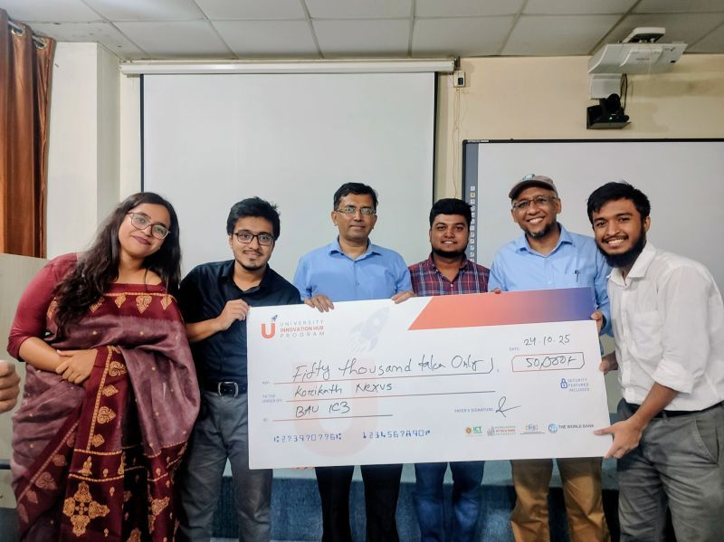
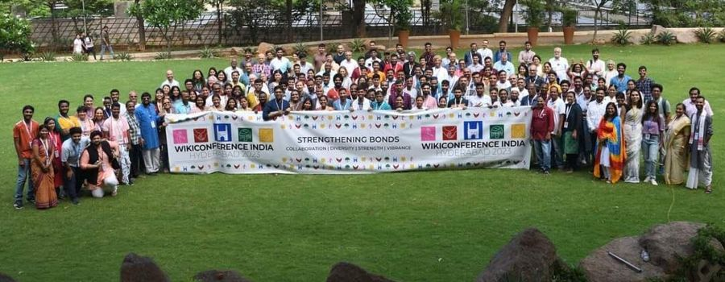

How I got here.
Drag through the years, press play, or click a dot. Journalism Photography Open knowledge Events and talks Awards
Journalism
Photography
Open knowledge
Events and talks
Awards
20192020202120222023202420252026
Files I’ve published under open licences
34,184 by
2026
- Multimedia journalist · MarNutshell Today Link
- Language Diversity Conference 2026 · Oct Accra, Ghana. In person, on a fully funded scholarship; the only participant from Bangladesh Link

Language Diversity Conference 2026 - Runner-up, Rights Hackathon 2026 · Nov Sapran and the Embassy of Switzerland, with team Korikath Knowledge Link

Runner-up, Rights Hackathon 2026 - Vice Chancellor's Appreciation Award · Nov BUP, presented by the Hon. Education Minister Link

Vice Chancellor's Appreciation Award - 9 features and reportsMemory, disability, work, language, power Link
6,051 files shared on Wikimedia Commons
2025
- Volunteer Excellency Award · AugWiki Loves Folklore
- Millennium Fellow · AugUN Academic Impact and Millennium Campus Network
- Pre-seed and seed fund winner · Oct University Innovation Hub Program (ICT Division, World Bank), with team Korikath Nexus Link

Pre-seed and seed fund winner - Champion, Devshot segment · NovDevthon 6.0, BUP Development Leaders Club
- Para Commando Brigade post · Dec5,100 reactions and 2,400 shares on Facebook
- Wikitongues fellowDocumenting the Chak language Link
- Built the Wiki Loves Folklore 2025 team320+ applications, a team of 14 Link
- Session on open knowledge and WikimediaAK High School and College, with Korikath Knowledge
7,767 files shared on Wikimedia Commons
2024
- Passed 20,000 photos on Wikimedia Commons · DecUsed by hundreds of media outlets
- Photographed the July uprisingPictures that ran in The Diplomat, Red Pepper and more
- Chief organiserWiki Loves Folklore Bangladesh Link
- Country representativeOpen Knowledge Foundation, Bangladesh Link
- Chief financial and operating officerKorikath Knowledge Link
- Coolest Tool Award, honourable mentionWikimania, for CampWiz
- JudgeWiki Loves Monuments and Food, Philippines
11,290 files shared on Wikimedia Commons
2023
- Media of the Day · MarWikimedia Commons featured my video “Beauty lachchi” Link
- WikiConference India 2023 · Apr Hyderabad, India. In person, on a fully funded scholarship Link

WikiConference India 2023 - Certified OrganizerWikimedia Foundation Organizer Lab
- Tech subcommitteeWikimania 2023 Link
- Scholarship committeeEduWiki Conference 2023 Link
- Core organising teamInternational Youth Day 2023 Link
- Bangladesh implementation leadIndic Oral Culture Documentation
7,939 files shared on Wikimedia Commons
2022
- Trust and Safety volunteer · AugWikimania 2022
- Started photographing for Wikimedia Commons · SepA volunteer contributor ever since Link
- Learning and evaluation in-chargeNDEC Wikimedia Bootcamp Link
1,133 files shared on Wikimedia Commons
2021
- Founded Project KorikathA photo project that fills Wikipedia’s visual gaps Link
- Coordinated In Search of the RootsArchive digitisation, NDEC Link
- Branding leadWikipedia Pages Wanting Photos, Bengali
2 files shared on Wikimedia Commons
2020
0 files shared on Wikimedia Commons
2019
- Started editing Wikipedia · DecA volunteer contributor ever since
2 files shared on Wikimedia Commons (my first uploads)
See the full record
Journalism and media
- Multimedia Journalist Nutshell Today · March 2026 to now
- Content Executive Dhaka on Air
- Intern Jamuna Television, web desk
- News Editor Splash
- Independent Photojournalist Freelance · three years and counting
Open-knowledge leadership
- Founder and Project Lead Project Korikath · 2021 to now
- Country Representative Open Knowledge Foundation, Bangladesh · 2024 to now
- Fellow Wikitongues, Chak language · 2025
- Chief Organiser Wiki Loves Folklore Bangladesh · 2024 and 2025
- Project Coordinator WikiWomen Bangladesh
- Lead Co-ordinator Wiki Loves Earth Bangladesh · 2024
- Implementation Lead Indic Oral Culture Documentation, Bangladesh · 2023
- Lead Coordinator Ikusgela in Bengali · 2024
- Advisor NDEC Wikipedia Editorial and Research Team · 2021 to now
- Regional Co-ordinator WikiForHumanRights, Wikimedia Foundation · June to July 2024
Events, juries and volunteering
- Tech Subcommittee Wikimania 2023
- Trust and Safety Volunteer Wikimania 2022
- Scholarship Committee EduWiki Conference 2023
- Core Organising Team International Youth Day 2023
- Judge Wiki Loves Monuments and Wiki Loves Food, Philippines · 2024
- Learning and Evaluation In-Charge NDEC Wikimedia Bootcamp · 2022
- Coordinator In Search of The Roots, archive digitisation · 2021
- Branding Lead Wikipedia Pages Wanting Photos, Bengali · 2021
- Millennium Fellow UN Academic Impact and Millennium Campus Network · 2025
- Campus Ambassador G17 UAC